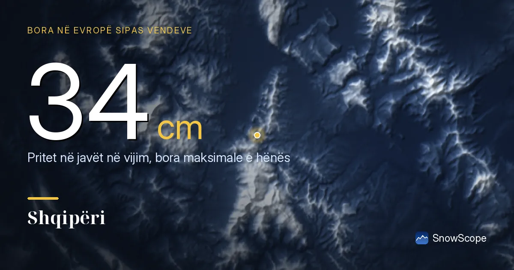

Shqipëri: 34 cm pritet në javët në vijim, bora maksimale e hënës
Bora po ndërtohet shpejt në majat e larta të Shqipërisë.
Shihni parashikimin e borës për Ski Pista Bigëll në aplikacionin SnowScopeTrashësia e borës, njoftime dhe harta 3D, falas.
Stuhia që vjen e hënën
E hëna 23 nëntor është pika e kthesës. Ky është kulmi i një sistemi më të madh moterie që do të sjellë borë në të gjithë lartësinë nga tani përgjatë fillimit të dhjetorit.
Në tre ditët e para (deri 24 nëntor), presim deri në 18 cm. Gjatë të gjithë shtatë ditëve përpara, totali mund të arrijë 34 cm në zonat më të boruara. Ky është dritarja kryesore e motit dimëror për dy javët e ardhshme.
| Qendra | Trashësia e borës | Borë e re, 72 orë | Ditët në vijim | Maja |
|---|---|---|---|---|
| Ski Pista Bigëll | 0 cm | 0 cm | 1 cm | 1.678 m |

Ku po bie bora tani
Mali Korab, Alat Shqiptare dhe Mali i Tomorrit të gjithë kanë grumbulluar 15 deri 16 cm në tre ditët e fundit.
Në 2000 deri 2500 m, thellësia mesatare e borës është 3 cm. Mbi 1500 m, afërsisht një e pesta e tokës është e mbuluar. Nën 1500 m, toka është ende e zhveshur.

Çfarë pret përpara: javën në përvijim
Bora do të fillojë të biejë nesër, 22 nëntor, dhe do të intensifikohet drejt e hënës. Pas pikes e hënës, bora e mëtejshme është e mundshme por më e lehtë. Në fillim të dhjetorit, parashikojmë 19 cm të tjerë në javën e dytë, megjithëse të shpërndarë në më shumë ditë dhe me intensitet më të ulët.
Stacioni i skive Ski Pista Bigëll, në 1678 m, ulet pikërisht nën vijën kryesore të borës sot. Ndërsa java përparon dhe bora e stuhisë arrin lartësitë më të ulëta, ky pamje mund të përmirësohet.
Sa shpejt po ndërtohet bora
Një javë më parë, vetëm 120 km2 të Shqipërisë ishin të bardhë. Sot, kjo është 560 km2, një rritje katërfish në shtatë ditë. Dje vetëm, 220 km2 fituan mbulim bore. Ky është saktësisht çfarë ndodh kur stina e thatë thyer dhe sistemi i parë i duhur dimëror lëviz.
Shpejtësia e rritjes tregon se sa e hollë është baza tani. Bora e hershme sezonale në tokë të zhveshur shpesh shkrihet ose vendoset shpejt. Shkëmbinj ka të ngjarë të jenë të dukshëm përmes parzeve të hollë në pjesat me ekspozim jugor nën 2000 m.
Malet fqinjë: i njëjti rrëfim
Mali i Zi në perëndim ka 11 cm në stacionin e tij kryesor dhe mund të presë 32 cm në javën e ardhshme. Maqedonia e Veriut në lindje tregon më pak borë tani, por parashikon 26 cm përpara. E gjithë rajoni po hyp në të njëjtën dritare stuhie.
Sa të sigurt jemi
Prijnit për përditësime gjatë fundjavës.
Këshilla për skiatorët
- Toka e lartë mbi 2000 m do të shohë akumulimin më të mirë e hënën dhe përtej. Planifikoni udhëtimin në kalesa të larta pas pikes, jo gjatë saj.
- Nën 1800 m, bora e hershme e sezonit është e hollë. Presni shkëmbinj dhe vende të zhveshura, veçanërisht në pjesat me ekspozim diellor. Prisni disa ditë për konsolidim dhe akumulim të mëtejshëm.
- Vija e borës ulet afër 1900 m sot. Do të bjerë ndërsa ajri i ftohtë mbërritet, por prijnit ndryshim midis ekspozimeve veriore dhe jugo.
- Moti malor mund të ndryshojë shpejt. Kontrolloni parashikimet lokale dhe bulletinat zyrtare të orrave përpara se të niseni jashtë piste, veçanërisht e hënën kur bora e freskët po ngarkon shpatet.
- Ndjekni hartën tonë të borës gjatë javës së ardhshme për të parë cilat majat dhe luginë mbushen fillimisht ndërsa sistemi lëviz nëpër.
About these numbers
Resort snow depths are the deepest snow on the resort's upper slopes on the date shown; they are estimates for an area, not a measurement at one point. Forecasts can change. Always read the official avalanche bulletin before going off-piste.
Cite this report
For research, teaching or the press: the numbers and charts are free to reuse under CC BY 4.0 with this citation.
SnowScope (2026), Shqipëri: 34 cm pritet në javët në vijim, bora maksimale e hënës, https://snowscope.app/blog/sq/2026/11/albania-snow-on-the-way-21-november-2026.html, accessed 2026-11-21
SnowScope (Atlas Labs). (2026, November 21). Shqipëri: 34 cm pritet në javët në vijim, bora maksimale e hënës. SnowScope snow reports. https://snowscope.app/blog/sq/2026/11/albania-snow-on-the-way-21-november-2026.html
BibTeX
@misc{snowscope2026albaniasnowontheway21nov,
author = {{SnowScope (Atlas Labs)}},
title = {Shqipëri: 34 cm pritet në javët në vijim, bora maksimale e hënës},
year = {2026},
month = nov,
howpublished = {\url{https://snowscope.app/blog/sq/2026/11/albania-snow-on-the-way-21-november-2026.html}},
note = {Published 2026-11-22 10:03 UTC; accessed 2026-11-21}
}· CC BY 4.0 · Methods, data and tools →
Ski Pista Bigëll: snow and temperature by height, this winter vs last (tools) →
Follow Ski Pista Bigëll
Falas: një mesazh kur vjen borë e re dhe parashikimi çdo mëngjes.